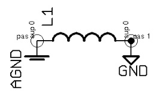
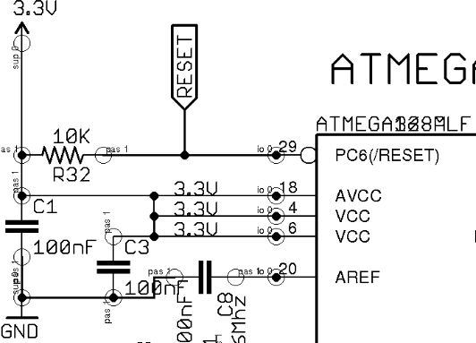

Im trying to understand all the configurations used in the schematic and some components that im not quite sure why are they there, I have taken screenshots of each one of them, hopefully someone with more experience on the project can tell me if what I think they are for is right , if im not, then, whats the purpose of most of them in the circuit?
-----------------------------
1.- For starters L1, it seems to be shorting out the analog ground with the digital ground, i have been reading about the topic, and what i found is that, The AVR devices that have built-in ADC have a separate analog supply voltage pin, AVcc. This separate voltage supply is provided to make the analog circuits less prone to the digital noise originating from the switching of the digital circuits., SO Im guessing this has something to do with this arrangement but i have yet to understand what`s the purpose of L1

2.- The there is the RJ45 jack used for several sensors however D5 also called one wire data eems to have some kind of current limiter resistor ( im guesing), i dont know any of the sensor circuits yet, however i would like to know why is this resistor there
3.- Theres the antena with several 22pF capacitors in series, simple question, why? what would happen if i remove the 3 capacitors and short the tracks in place?
4,- What exactly are these are these io0 ports and why are there 4 of them shorted to GND?
5.- AVcc, Vcc, and Analog Ref its also 3.3v, all of them loaded with bypas capacitors im guessing to reduce noise, but why is the Aref set to 3.3v? is this done in order to set an offset value for incoming signals into the ADC?

Re: Help understanding several components in the sch of eMonTx 3.4
I'll have a crack at a couple...
1. but i have yet to understand what`s the purpose of L1
Me too. There's more on that in this thread: http://openenergymonitor.org/emon/node/6196
I think it's misguided and would best be replaced with a big blob of solder, but Robert claims it's to "prevent 'ground noise' from getting into the ADC". I'm not even sure what that means.
5. but why is the Aref set to 3.3v?
Are you referring to the firmware now, or still the schematic? My reading of the schematic is that AREF is decoupled to GND, which is what Atmel recommend when you're using any of the internal Vrefs (including Vcc).
Re: Help understanding several components in the sch of eMonTx 3.4
L1 was included by mistake, carried over from a previous version. If you had checked the pcb layout, you would have found that it's actually shorted out by copper, and hasn't been removed from the assembly process because it costs more to do that than to leave it.
R33 is there for the temperature sensors. See "DS18B20 temperature sensing" in Building Blocks. How can you expect to understand the interface to a component if, on your own admission, "i dont know any of the sensor circuits yet"?
I can't see three capacitors in series. Have you actually checked what is present on the assembled board? I can't see three capacitors there either. There's a difference between making provision for a component and what is fitted at the time of assembly.
I understand "these io0 ports" are an artefact of the CAD system. I think they are vias.
Re: Help understanding several components in the sch of eMonTx 3.4
The io0 are pin types assigned to the Arduino symbol in Eagle. Usually I hide those in my schematic render to reduce clutter. I think you can have input-output, power-supply, input and output pin types. This helps easily track down schematic errors.